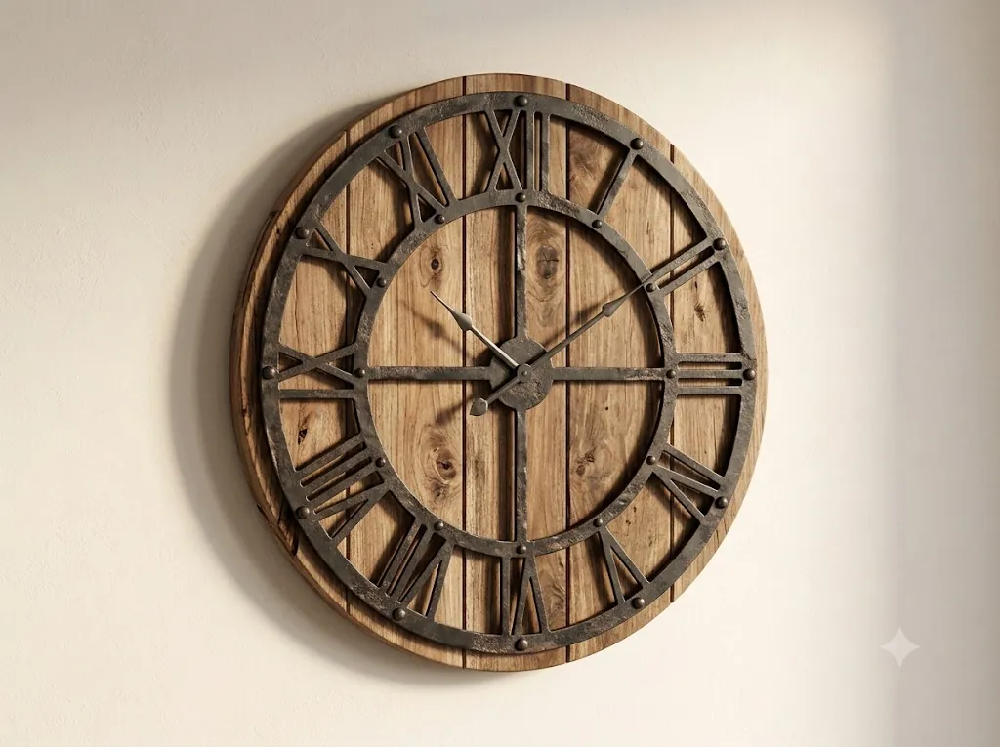

Rustic Wood & Iron Oversized Wall Clock (32")
Masterfully crafted in Jodhpur for high-volume international export, the Rustic Wood & Iron Oversized Wall Clock (32") reflects Modern Farmhouse sensibilities engineered for retail success at Kirkland’s, Maisons du Monde. Features Open-face iron Roman numeral dial secured to weathered solid Sheesham timber planks. Constructed exclusively from certified sustainable timber kiln-dried to strict 8–10% moisture equilibrium to prevent warping across diverse North American and European climates. Accompanied by electrostatically coated, corrosion-resistant ironwork with seamless hand-welded joins. Every piece is individually wrapped, buffered with high-density EPS edge guards, and boxed in an ISTA-1A drop-tested 5-ply export master carton (unit volume: 0.050 CBM). Fully compliant with the US Lacey Act, VRIKSH timber legality verification, and EUDR deforestation due diligence regulations.
| Material & construction | Open-face iron Roman numeral dial secured to weathered solid Sheesham timber planks |
|---|---|
| Dimensions | Dia 32" x 2.0" / Dia 81 x 5 cm |
| Carton volume | 0.050 CBM / unit |
| Minimum order | 25 Pcs |
| Lead time | 45–60 Days (FOB Mundra) |
| Western retail benchmark | $150 – $195 |
| Style | Modern Farmhouse |
| Indicative HS heading | 8306.29 — Wrought-iron decorative articles |
| Typical buyers | Kirkland’s, Maisons du Monde |
Indicative HS heading only — your customs broker confirms final classification. Kiln-dried 8–10% moisture, ISPM-15 dunnage, VRIKSH / Lacey / EUDR paperwork on request.